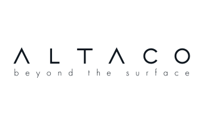

Навчальний мінісайт для знайомства з Codex: файли, код, термінал і перевірка результату.

ALTACO — українська компанія з Києва, яка займається дистрибуцією якісного італійського натурального каменю та кварцового агломерату. Представляє бренди Bagnara та Santa Margherita в Україні.
Матеріали: мармур, граніт, кварцит, травертин, онікс, кварцовий і мармуровий агломерат.
ALTACO — реальний бізнес-полігон для тестування AI-рішень: каталог, склад, клієнтські запити, комерційні пропозиції, логістика.
Натисни на картку — побачиш пояснення